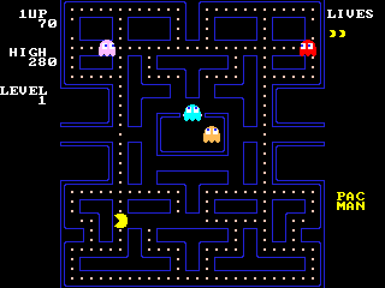
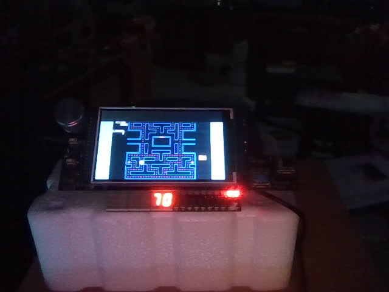

Pac-Man
The arcade game, written in Verilog for the DE10-Lite and its LCD / game-pad shield: the real maze, four ghosts that hunt the way the arcade ones do, power pellets, levels, lives, a high score and the intro tune on the buzzer. Built from scratch by the AI in one session, tested in simulation and on the board without a human, then handed over to play.
No bitstream in the repo (a .sof is 3 MB per project): restore the .qar or use the sources here,
one build makes it in about four minutes. The user guide has every command.
Contents
- What you will see
- Block diagram
- How a frame flows
- The game, state by state
- How the ghosts think
- Numbers
- How it was tested
- Review log
- Status and what is next
- Files
What you will see


Press Start (or KEY0): the intro tune plays, READY! shows, and the ghosts come out of the house one by one. The joystick steers; the last direction you asked for is remembered, so you can push it before a corner and Pac-Man turns when he gets there. Eat a power pellet and the ghosts turn blue: now you can eat them (200, 400, 800, 1600). Clear all 244 dots and the maze flashes white; the next level is faster. Three lives, one extra at 10,000 points. The score also shows on the six 7-segment digits; the LEDs count your spare lives.
Block diagram
Three clock domains. The ADC IP needs 50 MHz, so the joystick is read and debounced there and crosses into the
game with two flip-flops (slow levels: that is enough). The game and the picture live at 25 MHz, the VGA pixel
clock, so the screen reads the game's registers with no crossing at all. The LCD controller runs at 100 MHz
inside the library's Screens_dispaly, which copies the VGA picture to the panel.
How a frame flows
The picture is drawn continuously, one pixel per 25 MHz clock, straight from registers: there is no frame buffer for the game. The game itself changes only once per frame, at the falling edge of VSYNC, when nothing is being drawn:
- tick. The frame counter and the state timer advance; the game state machine (below) decides whether this is a frame in which things move. If it is, the micro-sequencer starts with actor 0.
- One actor at a time, one pixel at a time. For Pac-Man and then each ghost: add its speed to its accumulator (sixteenths of a pixel), take 0, 1 or 2 pixel steps. At a tile centre a step first asks the tile table "is the next tile open?" (one clock per question) and chooses a direction; then it moves; Pac-Man also checks the dot RAM under him. The actor's registers are written back and the next actor starts.
- Collisions. Each ghost against Pac-Man by pixel distance (not "same tile": two actors can swap tiles in one frame and never share one). A frightened ghost becomes eyes and the game freezes for half a second; a normal one starts the death sequence.
- Timers. Frightened time, scatter/chase mode changes (every change reverses the ghosts), when each ghost may leave the house, level done.
The whole update takes a few hundred clocks; the vertical blank is 36,000. The screen sees registers that only ever change during blanking, so nothing tears.
The game, state by state
Every state owns a frame counter. FILL rewrites the 1024-entry dot RAM from the generated tile table in 1024 clocks (it is also the reset path: the first fill runs when the PLL locks). READY is longer on a new game because the intro tune plays. FREEZE stops everyone for 30 frames when a ghost is eaten, as the arcade does; if two ghosts are on Pac-Man at once the second is eaten after the freeze, when the collision pass sees it again.
How the ghosts think
At every tile centre a ghost looks at the four neighbouring tiles in the arcade's order (up, left, down, right), never backwards and never into a wall, and takes the open one whose centre is nearest, by squared distance, to its target tile. The targets are what give each ghost its personality:
| Ghost | Chase target | Scatter corner | Leaves the house |
|---|---|---|---|
| Blinky (red) | Pac-Man's tile | top right | at once (starts outside) |
| Pinky (pink) | 4 tiles ahead of Pac-Man (facing up: also 4 to the left, the arcade's famous bug) | top left | at once |
| Inky (cyan) | the point 2 tiles ahead of Pac-Man, doubled away from Blinky | bottom right | after 30 dots or 4 s |
| Clyde (orange) | Pac-Man while 8+ tiles away, else his own corner | bottom left | after 60 dots or 8 s |
A mode timer alternates scatter (each ghost heads for its corner) and chase: 7 s, 20 s, 7, 20, 5, 20, 5, then chase for ever; every change reverses all ghosts. After a power pellet the ghosts reverse, turn blue and pick a random open way at every centre (a 16-bit LFSR), for 6 s on level 1 and less each level; the last two seconds they flash. Eaten, only the eyes travel home, through the door, and the ghost comes back out. Speeds, in sixteenths of a pixel per frame: Pac-Man 16 (18 while the ghosts are frightened), ghosts 15, in the tunnel 7, frightened 8, eyes 32.
Numbers
| Device | MAX 10 10M50DAF484C7G, Quartus Prime Lite 17.1 |
| Logic | 9,504 logic elements (19 %), 5,016 registers, 8 × 9-bit multipliers (the mouth wedge, the ghost distances) |
| Memory | 1,063,680 bits (63 %): 921,600 are the debug link's screen-capture buffer. The game alone is 125 k: the wall picture (122,880) and the dot RAM (2,048) |
| Clocks | 25 MHz game and VGA, 50 MHz ADC, 100 MHz LCD; 2 of 4 PLLs. Timing met, no negative slack |
| Pins | 101: VGA, 6 HEX, 10 LEDs, 2 KEYs, 10 switches, the shield's 16 Arduino lines |
| Build | 3 to 5 minutes; 89 warnings, all from the library IP and unused pins |
| Code | about 1,100 lines of SystemVerilog in 6 files, plus 140 lines of Python that generate the maze table and the wall picture |
How it was tested
Without the board: the self-playing testbench
sim/tb_pacman.sv instantiates the game and the screen, raises tick every 600 clocks, and renders the
screen the way the board's capture does (every second scan pixel to a 320 × 240 PPM). It checks, in order:
- the attract screen says PUSH START; Start leads to READY!; READY! ends and the game runs;
- Pac-Man moves left along his row and the score grows (he eats);
- 3,000 frames of random steering with the ghosts harmless: no X anywhere in the game state, all four ghosts left the house, Blinky never stands still for 8 frames while the game is in PLAY, the score passed 500;
- with the ghosts dangerous again, a life is lost within 6,000 frames.
Result: PASS, every check (about 2.5 minutes in Icarus). The rendered frames were looked at by eye: the maze, the dots, READY!, the ghosts in the house, the death animation.
On the board, over USB
The game accepts letters on the JTAG UART, so the AI can play without hands: s start, u l d r steer.
It started games, steered, read the screen back (scripts/de10.py screen) and checked what it saw: the score
climbing, GAME OVER after three lives, a clean restart with READY! and two spare-life icons (counted by colour), the
maze on the real LCD and the score on the 7-segment through the webcam (scripts/de10.py cam).
Only a person can check
The joystick's feel, the sound (the AI has no microphone), the intro tune, whether it is fun, and that the flashed design comes back after a power cycle. These are open; see the status below.
Review log
What went wrong on the way and what the review changed, so the next game does not repeat it. All of it is also in the
build-arcade-game skill and the gotchas.
| Found | Cause | Fix |
|---|---|---|
| Syntax error on a plain wire | inside is a SystemVerilog keyword | renamed to in_box |
| Mouth wedge wrong at wide angles | (a*b) > (c*d) compared at the operands' 6-bit width | products into 12-bit wires first |
Icarus rejected f(x)[7:0] | a part-select of a function call is not legal Verilog | the call goes to a wire, then the select |
| Ghost turned the wrong way | two non-blocking writes to the sequencer state in one clock; the last won | one assignment per path in M_GR |
| "Blinky stuck" false alarm | frightened ghosts move every other frame | the test watches 8 frames |
| 61,532 build warnings | a 2-bit ROM loaded from a hex file: one truncation warning per line | binary file and $readmemb: 89 warnings |
| Width truncations in the review | HOME_X ± 16 computed at 32 bits; a BCD add into 8 bits | sized constants; the sum goes through a 24-bit wire |
| A confusing double assignment | acc written twice in M_ACTOR on the dot-pause path | restructured: the pause path writes nothing |
| White bars on the LCD | the panel is 800 wide, the picture 640; the side strips are never written | not a bug; documented in read-screen |
Status and what is next
| Item | Status |
|---|---|
| Maze, dots, power pellets, scoring, levels, lives, high score | verified: simulation and board |
| Four ghosts: targets, scatter/chase, frightened, eyes home, house release | verified: simulation and board |
| Joystick play | to do by a person (USB play verified) |
| Sound: intro tune, waka, power, ghost, death | to do by a person (timings in simulation only) |
| Flashed to the board; comes back after power-off | power cycle to do by a person |
| Fruit bonus, the points that pop up on an eaten ghost, the attract-mode demo | not built |
Files
| File | What it is |
|---|---|
index.html, spec.html, guide.html | this overview, the architecture spec, the user guide |
pacman.qar | the whole Quartus project, archived by Quartus (sources, settings, data files) |
pacman.qpf / .qsf / .sdc | generated by scripts/new_project.py (pins, sources, timing) |
src/pacman_top.sv | the board: clocks, joystick, USB letters, LEDs, 7-segment, the library display chain |
src/pac_logic.sv | the game: state machine, per-frame sequencer, ghost AI, dot RAM, BCD score |
src/maze_tiles.sv | the 28 × 31 tile map as a table, generated by assets/make_maze.py |
src/pac_draw.sv, src/ghost_sprite.sv | the screen: layers, text, Pac-Man from math, four ghost sprites |
src/pac_sound.sv | the buzzer: effects by priority, the intro tune as a table |
assets/make_maze.py | writes maze_tiles.sv, walls.bin (the wall picture) and maze_preview.png from the maze text |
sim/tb_pacman.sv | the self-playing testbench (renders PPM frames) |
media/ | the pictures on these pages |